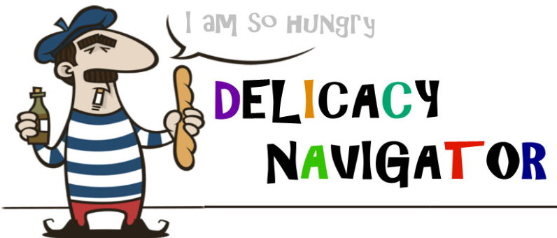

						<!-- <div class="container small gallery flush">
							<div class="row flush images">
								<div class="6u"><a href="http://youtu.be/RD8gyaMbsgc" class="image full l" data-poptrox="youtube,800x480"></a></div>
								<div class="6u"><a href="images/fulls/02.jpg" class="image full r"></a></div>
							</div>
							<div class="row flush images">
								<div class="6u"><a href="images/fulls/03.jpg" class="image full l"></a></div>
								<div class="6u"><a href="images/fulls/04.jpg" class="image full r"></a></div>
							</div>
							<div class="row flush images">
								<div class="6u"><a href="images/fulls/05.jpg" class="image full l"></a></div>
								<div class="6u"><a href="images/fulls/06.jpg" class="image full r"></a></div>
							</div>
						</div> -->